CC7: Métodos Matemáticos en Termodinámica
Herramientas matemáticas esenciales para la termodinámica: derivadas parciales, la regla cíclica, integrales de línea, condición de diferencial exacto y transformadas de Legendre. La maquinaria que hace posible derivar todas las relaciones del curso.
Temas que cubre
- Derivadas parciales: notación y significado de $(\partial f/\partial x)_y$
- Regla cíclica (o triple producto): $(\partial x/\partial y)_z(\partial y/\partial z)_x(\partial z/\partial x)_y = -1$
- Diferenciales exactos e inexactos: condición de Schwarz $\partial^2 f/\partial x\partial y = \partial^2 f/\partial y\partial x$
- Integrales de línea en el espacio termodinámico: dependencia del camino
- Transformada de Legendre: cómo cambiar variables naturales conservando información
- Aproximación de Stirling y su uso en combinatoria estadística
Conceptos clave
Regla cíclica
Para tres variables ligadas por una ecuación de estado $f(x,y,z)=0$: $\left(\frac{\partial x}{\partial y}\right)_z \left(\frac{\partial y}{\partial z}\right)_x \left(\frac{\partial z}{\partial x}\right)_y = -1$. Usada extensamente para relacionar coeficientes termodinámicos: p.ej. $(\partial p/\partial T)_V = -(\partial p/\partial V)_T(\partial V/\partial T)_p$.
Diferencial exacto
$df = M(x,y)dx + N(x,y)dy$ es exacto si $(\partial M/\partial y)_x = (\partial N/\partial x)_y$ (condición de Schwarz). Si es exacto, $\int_A^B df = f(B) - f(A)$ independiente del camino. $dU$, $dS$, $dF$, $dH$, $dG$ son exactos. $\bar{\delta}Q$ y $\bar{\delta}W$ no lo son.
Transformada de Legendre
Dada $f(x)$, su transformada de Legendre es $g(p) = f(x) - px$ donde $p = df/dx$. Intercambia la variable $x$ por su derivada conjugada $p$ sin perder información (la función original se recupera invirtiendo la transformada). En termodinámica, intercambia pares $(S,T)$ o $(V,p)$.
Aproximación de Stirling
$\ln N! \approx N\ln N - N$ para $N \gg 1$. Equivalentemente $N! \approx (N/e)^N\sqrt{2\pi N}$. Esencial para calcular $\ln\Omega$ en sistemas macroscópicos. Error relativo: $O(1/N)$. Para $N \sim 10^{23}$, la aproximación es prácticamente exacta.
Fórmulas fundamentales


Qué hay que entender
- La regla cíclica tiene el signo $-1$ — esto siempre sorprende, pero es correcto. Viene de que al mover sobre una curva de nivel $f = \text{cte}$, los cambios de $x$, $y$, $z$ están relacionados por un determinante Jacobiano.
- La condición de Schwarz (diferencial exacto) es tanto el origen de las relaciones de Maxwell como la prueba de que $U$, $S$, etc. son funciones de estado. Si $\bar{\delta}Q$ fuera exacto, no habría segunda ley.
- La transformada de Legendre preserva toda la información termodinámica — no pierde nada. Esto contrasta con, por ejemplo, integrar sobre variables: aquí sí se pierde información. Es un cambio de variables, no una proyección.
- La aproximación de Stirling es tan buena para $N \sim 10^{23}$ que el error es absolutamente inapreciable. Para $N = 100$: error $\sim 1\%$. Para $N = 10^{23}$: error $\sim 10^{-23}\%$ — irrelevante para cualquier aplicación física.